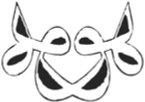

Four

Love is fire, love is fire.
–Hz. Ahmad al-Rifa‘i
The Scent of Cedar
In the middle of Middle Atlas Mountains, in the centre of central Azrou, a town a thousand and one metres high, in high-thirties July heat. A scorching summer of afternoon sunburns. No travellers here but me, and I blend.
“Est-ce que tu crois en Dieu?” Do you believe in God? asked the man from the other side of the story.
“Je ne suis pas Musulmane.” I am not Muslim.
“Est-ce que tu crois en Dieu?” Do you believe in God?
“Oui.” Yes.
“Donc, tu es croyante.” Then, you are a believer.
Azrou is a rock worthy of pilgrimage, a well-hidden, well-revealed village sanctuary. From a corner inside Le Café des Cèdres, I looked out onto large open windows at the backs of men sitting in pairs, as they looked out onto the sun-drenched Place Mohammed V. They sat immobile with smoke rising from their rounded, easygoing bodies. I hid indoors. Broken coffee on the white tablecloth. A glass of clear water. The aged butterscotch pages of Rimbaud’s Poésies in hand. This edition inscribed to someone named Mohamed.
“C’est la vie encore! Plus tard, les délices de la damnation seront plus profondes. Un crime, vite, que je tombe au néant, de par la loi humaine,” says Rimbaud in Saison en enfer. It’s still Life! Later, the delights of damnation will run deeper. A crime, quick, may I fall to nothingness, by human law.
When the book released me for a moment, I noticed that the café had filled. Among the arrivals, a man sitting alone reading a book in a nearby blind spot, I didn’t catch him at first, but I felt the eyes. Time elastic.
He waved. Waved again. Walked over and asked if I, by any chance, had a book to exchange. In his outstretched hand, Le Pain Nu, by Mohamed Choukri. Ha! Instinct said leave it alone. Quel instinct pourri!
Mourad was a thirty-six-year-old man in a child’s body, cheeks plump with baby fat on a delicate, small-boned frame with a mess of loose black curls about the head. A spark of Black Africa in his Arabic tones. He was soft-spoken and intelligent, but entrenched in a firm belief in God as an entity outside of himself, on that we disagreed. This transient fervour was both a discredit and a downfall.
He enticed me into hiking the cedar forest on the extinct volcanic craters outside of town. We took a quick grand taxi and everything turned calm as we entered the trees. The muffled shrieks of faraway Barbary macaques and nearby birdsong. The scent of cedar hit our noses like sex.
Mourad and I moved deeper into the forest without taking notice of the distant dogs approaching slow and secretive in attack position. Suddenly, three-headed beasts with sheer, flashing eyes leapt out all at once with violent barking. We bent to pick up stones in our defence, pretended to throw—they retreated. Three tongues receded back into the forest, whimpering.
I never know, but I go. Leave the known for the unknown. Possible violence. Possible death. For those on the margins, it is always the season of the wild dog. Once in the jaws of predators, the victim may appear to go into deep shock. Within a few minutes, the prey is dismembered. The dogs gorge themselves to fill their bellies. Even the mother takes a piece of the hunt. Regurgitates it. Pups clamour to receive their share.
Mourad and I walked for hours in the searing sun on a path lined with fields of red poppy. Conversation came easy, but when we sat to rest, the suitor revealed himself. The tongue did its duty and I gently declined his advances. He persisted. The deciduous forest had struck him like an aphrodisiac.
“On se tient la main?” he asked in the perfumed woods, as the branches broke underfoot. Shall we hold hands?
“Mais monsieur, mes yeux parlaient simplement d’amitié. Je suis une sorcière mais ce n’est que par accident, je vous le jure!” But sir, my eyes spoke only of friendship. I’m a witch but it is only by accident, I swear!
La means no in Arabic. The sound is both muse and music to the sixth sense. But how many times can the word no be negated? La ilaha illallah.
Leave all other notions behind you, my friend. They are best kept buried in the communal palace of unknowing. Woman alone never made such a fuss again and again and again.
Matityahu
We returned to Azrou in early evening as the wind drew a cool, double-edged sword down over the Rif. The moment we entered Le Café des Cèdres, a tall, skinny, European-looking man rose to greet us. Young, handsome, disheveled, a full head of chestnut mess, he held out a slender hand and introduced himself as Matthieu, a poet from Tiohtià:ke/Montréal, my hometown.
After coffee, Matthieu led the way past the cinema, down through the winding maze of the medina with its unadorned buildings hiding great temples inside. We came to a dilapidated, green door that opened onto a courtyard living room inside Matthieu’s rich, derelict palace. Stuccoed, peeling, yellow walls forever and vibrant red door frames rising high around us meeting at a sunroof of glass. A kitchen to one side, two bedrooms on the other. The floor tilework was a psychedelic green, black and gold mosaic.
We each took a seat on pillows around the wine table, octagonal and low. Our faces illuminated by candlelight now. Carved iron lanterns, endless Marlboros and bad Sauvignons. Matthieu’s baby-blue portable typewriter on the floor in the corner, which he had named Dounia, meaning world. Wine and discourse opened a door between us all in the geometric centre of the inner courtyard. Damn these meetings with surprising men and endless bottles of red.
Matthieu smothered us in stories as Mourad and I sat wide-eyed like young children around the fire when the storyteller speaks about that time he and a friend drove up from New York City to Quebec and crossed the U.S.-Canada border at Champlain with thirty thousand dollars cash hidden in the trunk. Or how he would smoke joints with his father before going out to play hockey on the frozen lake in upstate New York. Or how his brother-in-law was the family pusher for all the aunts and uncles. His father was the only exception because he grew his own organics behind the house.
“Life can be so soft when we forget for a few hours the universe of things. So wonderful to concentrate on vision and senses at the centre of a flux never interrupted by thought or impressions. In the end we try to live in harmony for a few hours, or at least see the beauty,” said Matthieu before the final al-’isha azan of the night. We all fell quiet for a moment, listening. Who called me here? I am a beast, a monster of sadness. I cannot pass this on to others. I should leave now.
Just then a spark from the candle hit an open book on the table. It was a bright red softcover of the Bardo Thödol. The flare exposed an echo of love, a curvature of muscle, filament of bone, bruised vena cava, the poet’s jawline, Matthieu’s great literature of Mind. Alive, I began to burn. Poetry takes poets to poets.
The dome of sleep came then and Matthieu offered Mourad and I each a bed for the night. We knew that there was a palpable need to make this bond persist through the method of our actions.
I prostrated myself into dream. There, Shams had thrown himself from a building and fallen onto the ground. He lay flat and bleeding on his stomach but was not dead. He raised himself slightly.
“My heart.”
“Here, take mine,” I said, kneeling.
He put his hand to his chest and died. His body had not been damaged, only the heart had broken.
Next day, Matthieu invited me to move in with him. Boots afoot and shawl to the wind, I escaped early morning, whore-like, gliding down the alley where storekeepers rubbed sleep out of their eyes and took note of my passing.
Rimbaud, Mon Amour
At times you arrive only to leave without leaving an impression. At others, you change direction quickly, and instead of heading into morning, you answer an invitation from the Friend. At that moment robed men offer me cigarettes from the balcony of their rented room as I check out of l’Hotel des Cèdres and move in with Matthieu.
We prepare. We are never prepared. A beautiful shame to want the solitude that only another foreign writer can offer.
This, as Mourad tells me that I have moved him, moved his heart. He is a fine student of life, full of desire, but the poet has charm in their hair alone. And Matthieu is a poet of all youth, all wisdom.
“À bas la forme littéraire! Aujourd’hui je n’ai pas envie d’écrire mais j’ai envie d’être avec toi—ENVIE. Dans envie, il y a Vie!” shouts Matthieu. Down with literary form! Today I don’t want to write, I want to be with you— WANT. In wanting, there is Life! “You are a great woman, beautiful, fascinating, believe it! I swear I wish there were more women like you, the world would be a little less cruel. I love you already from all points of view.”
Should I adore him simply because he loves me so suddenly? What am I doing here? Is this the fate of the wandering woman of a certain age? And what do we think of these young idolaters? I have only one urgency, and it is, without a doubt, the opposite of that of the crowd.
“Old man,” I say in my deepest rasp, “Can I smoke on your rooftop? I want to write and let go of some clothing.”
“Of course my dear, but first show me your breasts,” he smirks.
At the end of the day, the sun summoned my desire for Matthieu, despite my sorrow. Swelled my sex like yeasted dough, proving itself. Mouth full, our groins hard, pages darkened, hearts ashened, spirits in air, tender sex ours for the having and the walls moist with it.
“I want you. Your drive, to feel it, I want you to be aroused.”
This kneading and punching lasted for hours. To release the air through moaning. To roll and cut before falling into hot oil. Each step an important part of the cookery. After the meal, we smoked kif before falling asleep.
Next day, I sprang up from the mattress on the floor, the taste of small death on the lips. These voyages frighten. Help me, Rimbaud, mon amour.
“Je suis sûr que je suis plus intéressant que Rimbaud,” declares Matthieu. I’m sure I’m much more interesting than Rimbaud.
Poet’s Poet
On the yellow living room wall, Matthieu had put up black and white postcards of Allen Ginsberg and Bob Dylan at a party in 1965 and Amiri Baraka back when he was still LeRoi Jones. This was our continuum of poets. I took this to be a blessing on our endeavours. Shams now pushed to the back of Mind, impatiently waiting, rabid. Spearmint tea, hunger and lust now renewed interests. The fit of mouths, the soft and solid between the legs. Who gave this poet the right to fall inside me so quick?
“I sometimes get hard while I’m writing,” says Matthieu one afternoon like nothing. “And then, in my mind, I tell myself that I am a great writer. I can do it. The greatest writer in the world who could succeed in getting someone aroused through words, wet from start to finish through poetic coaxing alone.”
Ha! But to have such a riotous lover—even for a moment. Our mouths both dry from anxiety, wine and Western pharmaceuticals threatening to calm our breakouts. Together, we make one Janus. One body, one head, two faces. He takes antipsychotic medication to calm the hallucinations. I trashed all my pills in Miami and now reap the inflammatory results. Do not let it scare you, I say to myself. Let it be a welcome guest, like a gift from God.
“The most recent diagnosis,” Matthieu unveils one morning, “is that I was classified as schizophrenic with a significant delay in development on several levels, social in particular. So, I can’t understand how a woman like you could take interest in a man like me. I don’t want to believe; I want to understand. For me, it’s easy to say I’m crazy actually, but explaining why I’m crazy is another matter altogether. Explain to me why you’re with me,” he demands, cracking open his first beer at noon. “I don’t know, maybe I’m just predisposed to psychosis.”
With Matthieu, the discourses were sometimes short and lightning like a Gulf Stream crossing, or lengthy and painful with the corporeal ravaged like the face of Burroughs or Bukowski with their combined hundred years of work under the belt. Veins on the nose, cheeks sunken like boats attempting a crossing—unsuccessful. Wrinkles the only waves left. Bags of skeletons on the Styx, but what Poetry! A knowledge rendered Absolute and Explosive. A molecule of Nur in all the pages.
I just want to be alone with you, a return customer scared of her own reflection. You make me slightly weak in the knees. I am transformed at higher speed than normal.
We edge the fantastic but it is a long and guarded border. The weight of water, the spirit located, the death of God, Unity of God—two writers should not take up residence and expect to get anything but work done. The work and the living become wholly inseparable. There is such an equal exchange that the writing can barely capture a moment before another arises with such intensity!
“Ce n’est pas la forme, c’est l’essence qui m’intéresse,” says Matthieu. It is not the form, it is the essence that interests me.
We make a single sound. Each a last and final prayer. Our solar plexus on the sleeve. Invocation when both speaking and speechless. The Song of Strong Sun.
“Tu gouttes la cigarette et la poésie,” he whispers, kissing a lobe. You taste of cigarettes and poetry.
A little solitude before the fire, please. Such elegant anticipation when nothing is as sacred or as profound as this. I pray neither of us runs out of oxygen. I am not ready to finish my breath practices yet.
Herb Afrik
As quickly as I land, I take off. Breaking open our bubble after two weeks inside. Unwrap myself from Azrou’s arms and like a good traveller, gather all my belongings and leave at dawn. A yawning Matthieu walks me to the bus. Abandonment is real.
I hug desert lowland, High Atlas in the distance and ten hours later narrow red alleys scented with amber open before me. Faith around every corner. Marrakesh is a layered touchstone, amur akush the Land of God. Noise and chaos, a show or a slow, robed walk on the hot edge of death—easy. Seductive. Impossible even to imagine the sustain. The high-pitched music. The five times prayer. A woman’s head covered tight for days.
I run away to my old friends Solitude, Ablution and Toiletries. My vanity no less, part conditioning, part condition. At sunset, I climb onto the rooftop terrace of Hotel Afriquia to smoke kif. It is deserted except for occasional palm and the clack clack of giant storks courting each other from nests five stories high. The azan, nothing more—all actions suspended as the praise song comes at me from minarets on all sides.
After one night in Marrakesh the road takes me deeper south to Essaouira again. Once there, I head straight to the souk and Hakim who greets me with a knowing smile and royal mint, rose and opium tea. I had run into the arms of another man.
Our nerves calm after a few sips, Hakim sits close to tell me about the Sufi brotherhood of the Gnawa. His ancestors were neither literate nor original speakers of Arabic, but slaves brought from sub-Saharan West Africa. The legacy of African animism and Sufism lives on through the ceremony of poetry, music and dance known as the lila.
“In the lila, we invoke the Invisible. We recall the experiences of our ancestors. Praise them and the unity of all that is. It is an act of absolution, forgiveness and gratitude. Your timing is perfect, my sister. The festival begins tonight.”
This is why I had come.
After a strong cup of touba coffee spiced with guinea pepper and clove, our energies increased. Hakim closed the shop and we headed out into the streets where nothing was forced. He held my hand for a time, then disappeared, then I disappeared. Both of us hidden inside the festival of perfect and missed encounters. This was the world Shams had tried to show me.
Like a lightning madwoman, ideas crossed my mind, invaded me, then left. They would not cease. I was in the thick of the audience now. The hypnotic frequencies of the music enhanced the communal trance. The crowd thick and swaying as one in time with the rhythm. No such thing as direction. Only the low-tones of the sintir bass accented by high iron krakeb castanets and Arabic prayers sung in call and response over and over. La ilaha illallah. The whole of it an invocation. Love ritualized. A bringing together of communal needs into One. A natural sense of belonging on African soil. Ceremonial reminders of divine living. Desire increased and quenched. A return to the source. The inside of the chest. The arms. The air. Lift. Light. Nurun Ala Nur. Is this how conversions begin?
Presence and Abandonment
I return to Matthieu three days later—no—it was he who found me lost in the middle of Boulevard Moulay Abdelkader, sick and bruised from the festival. He put his arm around me and we stumbled to Paradise Café where avocado milk was the precise remedy. I had been emptied by Hakim’s medicine and the gathering of Friends. Azrou’s medina rang loud around us, and Matthieu, Le Bateau ivre, was trying hard to save me from myself. He brought me home, bathed me, prepared the tea, and embedded me.
“Tu m’aimes pour mon chagrin tandis que je m’allonge en pleurant, folle d’opium, même. L’amour prend fin et recommence simultanément. Sans raison, ni but. Une simple action vécue sans pensée. Je m’infiltre sans vouloir m’infiltrer,” I tell him. You love me for my sorrow while I lay here weeping, mad with opium, even. Love ends and begins simultaneously without reason or purpose. A simple act lived without thought. I implicate myself without motive.
We both needed saving in this sacred and secular story. When I wake up next morning, I offer myself to him only because he had not yet begun to drink that day. But alcohol is a poet’s blood, you don’t escape it that easy. You leave it from time to time for drugs or lovemaking, but always return to intoxication.
He had wanted me to leave the bathroom door open after lovemaking so we would never be apart. Perhaps he had simply wanted to protect me and I was grateful for that. But where was the freedom for either of us? For my own security, I closed the door. I could only give so much. We argued and it set us both to writing. Strange, this writing in the Presence. It is a binding freedom. We are close, living each day just shy of happiness.
Even now, in the throes of writing next to each other on the floor beneath the bright, late-day sun, I leave Matthieu’s side and move to the rooftop for solitude.
“Tu m’abandonnes encore,”he pleads. You’re abandoning me again.
“Oui, mon amour.”
Love always asks something of the future.
Waking and Dreaming
The line between waking and dreaming disappears. I am meeting people in dreams that I have met in previous dreams and discussing this inside the dream itself. An invisible reality presents without fail. Which one which? Do not resist life, it says.
In this dream, I am preparing breakfast. A man whom I understand to be my husband tries to help, but fails. I scold him. Pouring hot cardamom tea through a jute napkin is not a good idea when one is still half-dreaming. He retreats to folding laundry, sighs and looks out the eastern window as the morning pours in, bathing him in sunlight. I place steaming tea before him.
Just then, three men walk by outside in the street carrying a black cloth with something heavy in it. One of them is the man who will become my murshid. I call out but no one hears. All I can think is, get your things and go to them. But I wake up instead—dry-mouthed, thinking, why didn’t I help them carry that stone?
Prayer Positions
Transitional smooth, the light does eventually come. These legs fold easy now. Lotus a natural prayer position. Trance comes at odd times though. The key to a solid meditation is not moving, though I moved to tell you this.
The sun veils. Matthieu has been asleep for sixteen hours. It’s his medication—les épées empoisonnées. Better to trust the African pharmacy, so I burn white benzoin to deepen our disposition, settle myself into position on the terrace and welcome the al-zuhr call to prayer. A meditation overtakes to join both love and death into one act or non-act.
In Zen, you are taught to sit still in lotus with eyes half open and focus on breathing. In Vipassanā, you observe consciousness at the edge of a nostril, and let it swim freely about until a strong pulse can take it helix-like up the thigh or down the scalp at will. In Tasawwuf, discourse on Truth, Love, dreams and human beings are communal. Meditation can be silent, seated, sung, swayed, chanted, turned, and is always held in service. Ecstatic prayer as practice for living. It comes from inspiration and runs toward unity, Tawhid. There are ceremonies and then there are the source of ceremonies. It is a question of remembering.
Blessings on the men who perform ablutions and pray outside our window.
“How do you pray?” one asks me from his chair as I pass beside the mosque on my way to market. “We raise our hands cupping our palms together like begging bowls to ask and receive. How do you pray?”
“It’s personal,” I say and run quickly away.
As I cross our door sill with groceries in hand, Matthieu emerges from the bedroom shirtless with his notebook in hand, “I would really like to write something on Nina Simone and women of the South, but strangely enough I cannot put into words what I feel for them. It would be easier with music, but I’m not a musician. So fuck it, I pray. I pray for you too love, my dear. I send you constant energy with all sincerity.”
I set the bags down and embrace him. The tears come again. I am doing this, but really, I don’t know how to do this. Take refuge, leave refuge. Prayer is the inner medicine for outward action. Repeat the names of God. You’ll excuse me, sometimes I want to pay more attention to the unity of God.
The Brilliance
Every day, the poet cloaks himself in black and goes out for broken coffee to remember civilian life. He is a man living only in spirit to the detriment of the body. Ascetic outside of opium tea, kif, vodka, Volubilia red and café cassé au Paradis.
I am praying now, learning the Fatiha interrupted only by his goodbye kiss before he steps out into the medina. This I accept, but for him to have forgotten his dreams—that I do not!
He withdraws and I rush to clean, eat and smoke so quickly that I burn my lip. The fire is ready. I accept that I need help. I light a fire out of my hair. The brilliance! I need not move to have union with God or be awake to God. Stillness is key. Stop for a second damn it!
Just then, Matthieu returns home to catch me off guard.
This time, I am shirtless, sweeping the floor,a half-smoked Marlboro dangling from the left side and dreadlocked hair in defiance of all gravity. I wipe the sweat from my brow knowing this body is scarred beyond recognition. I have voluntarily moved into the shade. Consumption itself needs a purge. A purge toward the Truth is a good idea. I see now, there is Beauty, even in death, even in my inabilities. In my failures with Shams, there is Light.
Tavern of Two Doors
“Elle est folle de ta folie, et tu es fou d’elle,” says Sabour each time he visits us for afternoon wine. She is crazy for your madness and you are crazy for her.
Sabour, Mourad, Aadil and Abbas were becoming regular customers at the house. I suspected Muslims in disguise who had a misunderstanding of wine-rapture from all their inebriated nights until dawn.
One time, I had left the living room party early to write, leaving the men to their red drink and football debate over Atlas Lions versus Blues. Once in the next room, I had nothing to put down. I drank vodka like water, afraid of my own swollen sex.
Perhaps I am here for the Beloved to come and collect me. Walk, walk, my Love. Your very step gives me sign of submission. I am drunk in the tavern, but is it the right one? I am on a boat crossing the Styx. In a room with a view of ruins. Barely present in this room.
Next morning a deafening crash rouses me from bed. I open the bedroom door and see Abbas lying on the living room floor on his back, awkward, immobile, eyes wide open staring up at the sunroof. His deeply lined, copper-skinned face offers no reflection. A chest of lid, jutting teeth, mouth open with frothing pink vomit leaking off the right side. I grab his hand and touch the wrist, the neck, looking for a pulse. But there is none. He is dead.
In truth, he is not dead at all, only dead drunk. Died in the living room after the kind of night where good men refuse good food in order to intoxicate themselves further into violent unconsciousness. The glass of cheap red put up to the test of ensuing nausea, vomit and the shit of the Depressed.
“Ouf, il y a des matins où ça fait mal et des crépuscules qui donnent envies de rire—en tout cas j’ignore où je vais épuiser toute cette énergie, je n’ai pas peur JE N’AI PAS PEUR,” says Matthieu. There are mornings where it hurts and evenings that make you want to laugh—anyway I don’t know where I’m going to use up all this energy, but I’m not afraid I AM NOT AFRAID.
Ville Nouvelle
After the incident with Abbas, Matthieu and I leave town for a while. We’ve been together forty days. The vintage grand taxi holds us for two hours, collecting strangers by the side of the road, until the dust of Fes rises up around us.
On the white colonial streets, men walk holding hands affectionately but tap Matthieu on the shoulder when he kisses me defiantly at the crosswalk. The medina is medieval and time exists beside itself, outside of space and causality.
Near the city centre, we find a weathered, velvet restaurant that serves alcohol to men sitting in their own thick smoke as sun washes through the stained-glass window. I am the only woman in the bar with a boy who needs to be saved from himself. What good can come of this?
“Je n’echapperai rien, je ne laisserai rien au hasard—tu excuseras le biffage, okay? Et tu excuseras tout ce qu’il pourrait y avoir à excuser. Merci,” says Matthieu. I will not escape anything, I will not leave anything to chance—you will excuse anything I’ve left out, okay? And I apologize for anything that needs an apology. Thank you.
A black cat comes and goes. Is it a sign? We have seen this before. What am I doing here with this man who lives only in his mind? The body long lost to acts of human stress repetition, devoured by its own spirit tenant. He is no good to me in bed these days, but good—a good human being. Will I abandon him the way Shams abandoned me? Relive the end of my previous affair only to have the roles reversed? Why in the land of God did Shams leave me?
Strong Will to Make Flames Appear
The call to prayer vanishes in this loud modern mess of Fes. The newspaper reports that a muezzin fainted after calling yesterday’s al-asr. It is remarkable that he did not die in this summer heat.
I’m an old fart at thirty—flawed, scarred and sagging. Mirrors compliment me on my use of gravity. I’m still trying to relate to the aging process as it manifests. This muscle pulled easy, that silver pubic hair. Even the scent between my legs has changed. A coarse inland sea salt wet from attempts at ceaseless prayer. The whole house smells of umami, Volubilia red, shit and sexual endeavours—could be bad for the kidneys.
Suddenly, a strange symptom occurs, a burning, though not for human delights but for all that is. For the secret inside all the events of the world.
These days you need strong will just to make flames appear. If I stay here, I will be destroyed along with Matthieu. Die a slow death with this young man too drunken and skeletal to look up from his scribblings.
Hooded like a child or a prophet, he slips past our hotel doors and into the souk for Marquises and bottles of Volubilia. In the end, we both take our poison with allegiance and privacy. Never forget the value of intoxication in the big city. I couldn’t see his voice, you see. His voice made love to me. It hit me fully with the Voice of Voices. The Giant Embrace.
It is clear that Matthieu is not the end result but part of the organic process. I take refuge in him because in my state, there are still too many aggressors around, visible even from this luxurious, medieval Fes windowsill.
That afternoon, I hear the lighter snap beside my ear as I sit in silence, breathing. Eyes open quick. I think Matthieu might set fire to my skin. His lighter, close to my cheek. I gasp. He kisses me full on the mouth. Wet and lust. O the volatility of love. If I go up in flames, so be it.
Awe
As soon as we return to Azrou, Matthieu and Mourad talk about me behind my back over coffee in Paradise. My ears burn from down the street and all I can think to do is leave. My turn to sacrifice now. No expectations save for what is, and what is created by putting one foot in front of the other.
When they return home, a small fist fight erupts between them. I break it apart. Madness. I struggle and my underwear is soaking wet. There is no denying what natural love brings forth from both these human beings. Discourse, discord, orgasm, and awe.
An empty hallway is suddenly full—no—what already exists becomes manifest. Two eyes see the power of one action, visible and invisible. Comme dans les tempêtes de sable, il faut se momifier pour passer à travers. Il faut être plus feu qu’elle. Like an oncoming sandstorm, one must mummify oneself in order to pass through. One must become more fire than her.
Une profonde méditation me tombe tout droit de l‘au-delà. A deep meditation falls straight down from the beyond.
Une boucle de puissance fluide. Les limites du corporel vite dépassées. Vaincues avec Toi. A fluid buckle of power. Limits of the body quickly exceeded. Defeated with You.
Je n’y vois rien dans ce noir. Mais je n’ai aucun choix, seulement un devoir. Ma vue s’éclaircit lentement. Le ciel est privé de nuages. Je plane. I see nothing in this dark. But I have no choice, only a duty. The view is slowly clearing. The sky is wanting of clouds. I am soaring.
Je vis mon avenir à chaque instant. Je n’oublie pas l’éternel. I live my own fate at every moment. I do not forget the eternal.
L’éclat divin me donne mal au coeur et ma vision se lance à travers tout ce qui est solide. Je suis solide et donc je vois à travers moi-même. The divine burst makes me sick to my stomach and my vision throws itself through everything that is solid. I am solid and therefore see through myself.
Je n’ai pas envie de courir mais de marcher lentement, avec légèreté, le temps d’apprécier ma nouvelle vision. Je suis un peu myope, mais de près, quels moments! I have no desire to run but rather to walk slow, with grace, taking the time to appreciate this new astonishment. I am somewhat short-sighted, but up close, what moments!
Matthieu means Matityahu, gift from Yahweh, gift from God. And he loves me! An assuredly mad soul. I am not tired, my love, mais épanouie.
The Battle of Exiles
Today the house is thundering with voices arguing louder than Charlie Parker’s horn. Just goes to confirm that it’s not yet time to visit the world where two brothers war. Matthieu and Mourad yell about me in the living room again. Fighting words and bebop. I seclude myself with headphones in the bedroom. Mourad slams the door on his way out and Matthieu comes to me, stands in the threshold, his face so young, radiant, exposed, emotional, sober for a quick moment. In the quiet, there is only Bird holding harmony and tempo like a sword.
“I love Mourad. I love him, I love him the way I love you—I would not want to be asked to choose between the two of you, I would be extremely annoyed. But God spares me this kind of pain, I’m grateful. Thank you,” says Matthieu.
He challenges me to write more than him. But it’s not a competition. I did not choose to write, saturated by this exorcism on paper that leads to nothing. This writing will not save anyone. A praise song from a madwoman to a madman and the man who left her. Ha! Matthieu be praised! He absconds with my heart. What can I do but give it?
“I wrote a quatrain for you but I’m too embarrassed to show you. In the end, it’s nothing sensational, probably because each line has been thought and rethought and so there is an obvious lack of spontaneity, I am aware of it—I intend to review all my poems in order to get closer to balance.”
We are high performance, all-terrain hunger, all day long into night. Dynamic. Intrepid. Nude regardless of clothing. Sex regardless of sex. But this is not my goal, my function remains to write, badly even. Therein lies the battle.
“Il ne faut pas chercher à être poète, il faut l’être, ou ne pas l’être,” dit Sabour, le grand clochard qui boit comme un trou. C’est un drôle d’oiseau qui n’est pas toujours très drôle. You cannot try to be a poet, you either are one, or you are not, says Sabour, the tramp who can’t hold his drink. He’s a funny bird who is not always very funny.
But the ego won’t let go of me. It warps everything. Even the body politic—un-covered, un-perfumed, un-deodorized, un-washed, so apparent, so vulnerable.
“You’re a peacock,” says Matthieu to me in the mirror.
I’m dumbfounded again, agape. Can do nothing but observe my environment alongside grotesque intestinal gas emissions. I burp and it comes out “Hamdullah.”
At moments like these, I don’t even know whose face I’m looking into or whose eyes are looking out of this body.
Late one night, a thunder shakes the front door. Someone pounds at us in a rage. Another drunk friend in the middle of night looking for wine, while we were in the heat of literary love.
It’s Abbas. The one who had died drunk on the living room floor not long ago. He spits it all out for the medina to hear. Throws his vitriol at us while hitting the door for a quarter hour. Matthieu does not respond, nor do I. We sit in silence trying to write, ignoring the attack. Cats join in, howling like screaming children in the street.
“You have to leave Azrou gently,” Abbas moans over and over in a drunken haze, “or we will make you leave. We will burn the building down.”
Matthieu finally opens the door. I can hear compliant sounds but Abbas’ voice intensifies before it abates again. They make their way into peace but I don’t know how. After a few minutes we return quietly to the exile of our journals, side by side.
In the Presence, there is no such thing as solitude, although even friends may throw their embers. We sit in such a way so as to be closer to our own folded legs, Matthieu and I, scribbling away in the shattered night. Mostly calm after the fighting. Feet now hardened and powdered with Middle Atlas dust blown from the neighbour’s terrace. Fresh-faced and sunken-eyed, torn-skinned and flexible even in the heat of hurt. We are guests, but am I being exiled from African soil?
“It’s not a biography, it’s a drunkography,” says Matthieu without looking up from his writing.
Opiates
Opium and alcohol can cause bloodletting but no one knows the extent of antipsychotics. Papaver pods induce relaxation through wild, vivid dreaming. It can take some time for the effects to appear. One must not overload the tea with seed. Crack five or six dry pods per small kettle. Just enough for possible inflamed pleasure and gratitude in all things.
We sit tight in our neuroses. Both of us crippled by the past, one that he cannot remember and one that I cannot forget. Results are the same.
One symptom of addiction to opium tea is a great itching upon the body. But this can be prevented by removing the seeds from the tea before drinking. Accept potential toxicity and expect certain levels of sickness, with fecal events and euphoric dreaming.
“Mais j’ai le mal de l’univers, Maya. J’aimerais danser avec toi, naïve bulle de terre—ô bulle de feu en fait, qu’est ce qu’on ne pourrait pas encore inventer pour se tenir vivant,” says Matthieu. But I’m sick of the universe, Maya. I just want to dance with you, naive bubble of earth—bubble of fire. What we could invent just the two of us in order to hold on to life.
Matthieu asks if he is the most spectacular man I have met in Morocco. I tell him that he is the only person I know well.
“Je peux bien me passer de toi,” he tells me. I can do without you.
“Tant mieux.” Whatever, I reply.
“J’suis l’enfer.” I’m the bomb, he says, smiling.
Later, he’ll shrug his shoulders and throw me a childish look saying, “I love you.”
We are part art and part medicine. Part dopamine blocker and isotretinoin. Morphine, codeine, noscapine, papaverine, thebaine, fat, protein, plant wax, latex, sugar and bitter grape.
I try to heal this man’s manic depression with microdoses of opium, but I simply replace one drug with another. All this to dispel his desire for midday drunkenness and possible seizures by early afternoon.
“The psychiatrist appeared so insensitive when he spoke to me about my hypersensitivity. It’s amazing that I can even contain so many hundreds of pills inside this febrile body,” says Matthieu.
In a moment, we will cease decaying, Inshallah. Madness touches. We push it back. It is the game of the universe.
I am a failure today, ineffective. My incessant breathing leads to heavy legs and arms, paranoia, withdrawal, sadness, fear, insomnia, uncertainty, fatigue, acid reflux, back pain, pimples, Fatihas, drunkenness, turning, sitting, writing and a longing for what was never really mine.
I examine my face in the bathroom mirror. Today again my lips and cupid’s bow are all red and throbbing, tomorrow the skin will crack and fall away. Side effects. All my muscles sore, coordination off. Our libidos dry from drugs. Our bodies in the end, one two-headed bird attempting to fly with varying degrees of failure.
One morning as we lay lazy in bed, Matthieu told me about the last sexual encounter he’d had before we met. It had been four months earlier, for money, but he had refused to pay. In the end he did, but the act had disgusted him. His ambiguous relationship with sex caused much of his suffering and anguish. Most of it due to the side effects of the medication.
“Ça mène à quoi à la fin? C’est quoi cette énergie sexuelle qui nous domine, qui nous possède, qui nous tient à ses pieds mais nom de Dieu je n’y comprendrai jamais rien.” What is it all for in the end? What is this sexual energy that dominates us, possesses us, has us by the throat, in the name of God I will never understand anything.
In my bleakness, my organ shrinks. People fall in love with me and again it swells. What is this living? In the end, it is easy to love someone, but difficult for the other person to love themselves or give what little remains.
Prelude to Liberation
Show yourself, young elder. Reveal your list of geniuses, your desires refused. Your sex grows hard when you write, and when you read your writing. With my face between your thighs and your writers’ hands in my locked hair, we will one day be free of all derision— promis, juré—I swear. Let us drink the horrible wine of Azrou, smoke the kif and take the ink and lead in hand and all-natural delirium by the ass to vanquish this fantastic suffering. Task impossible. Task unforgettable.
Rise! I’m an invisible saint praying on your rooftop. Let us have broken coffee in Paradise. Let us put the coated tar to our lips in order to flood the morning body along with the fog of the Maghreb. May the God of Matthieu be aroused observing these brushes of delirium at the entrance of my liberated entrails. I do not hide my satisfaction. In fact, I announce it.